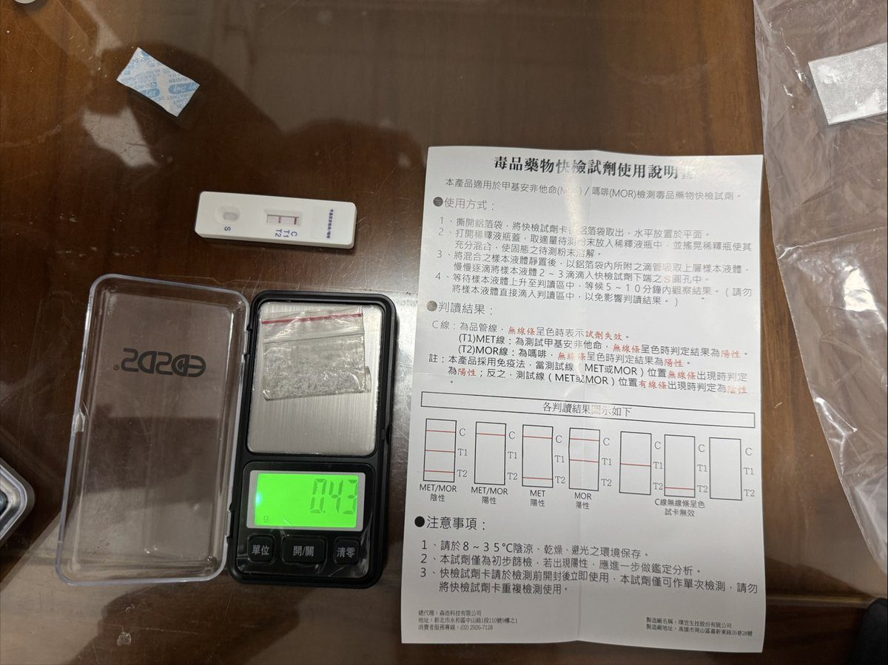

毒駕載人貨車遭攔 新城警罰15萬沒入車輛

可樂電子報小編/編輯
新城警分局富世派出所員警於11月10日晚間8時許，執行巡邏勤務行經臺8線185公里處，發現一輛自小貨車後車斗違規載人，立即上前攔查。貨車後車斗依規定不得搭載乘客，員警依規定示意駕駛停車受檢，盤查時卻察覺陳姓駕駛神情恍惚、反應明顯遲緩，懷疑可能有毒駕情形，經徵得駕駛同意後實施毒品唾液快篩。

快篩結果呈甲基安非他命陽性反應，警方隨即依公共危險現行犯將陳姓駕駛逮捕，並在車內查獲安非他命及海洛因各1包，另扣得快篩試劑、電子秤等物品。全案依道路交通管理處罰條例新修正規定，處新臺幣15萬元罰鍰並沒入車輛，同時依違反毒品危害防制條例及刑法公共危險罪，移送臺灣花蓮地方檢察署偵辦。

新城警分局說明，毒駕新制已於115年10月31日施行，針對毒品檢測呈陽性以及拒絕接受檢測的駕駛人，都大幅加重罰鍰，並有吊銷駕照、沒入車輛等相關規定。警方表示，新制上路後取締作為與罰則同步加嚴，取締毒駕不會因新制施行而鬆懈，將持續在轄內重要路段加強攔檢，杜絕心存僥倖的駕駛上路。

新城警分局呼籲，毒品會影響駕駛人的判斷力、反應能力及注意力，施用後容易出現嗜睡、幻覺或過度亢奮等狀況，讓駕駛遇到突發狀況時無法及時反應，大幅增加交通事故風險，嚴重危害其他用路人安全。民眾若發現疑似毒駕或危險駕駛行為，可記下車號並立即通報警方到場處理，共同守護道路交通環境。
警方提醒，施用毒品後開車上路，不僅觸犯毒品危害防制條例，還可能構成刑法公共危險罪，一旦發生事故，後果遠比一時快感沉重，案件移送後仍將面臨司法追訴；若因施用毒品導致無法安全駕駛而肇事，除刑事責任外還須負擔民事賠償，請民眾切勿心存僥倖、以身試法。新城警分局也將持續結合各項勤務，加強取締毒駕及各類重大交通違規。
🌟 掌握花蓮在地第一手資訊・歡迎訂閱追蹤
深度紀實報導、在地精采影音專題，第一時間接收最新消息！